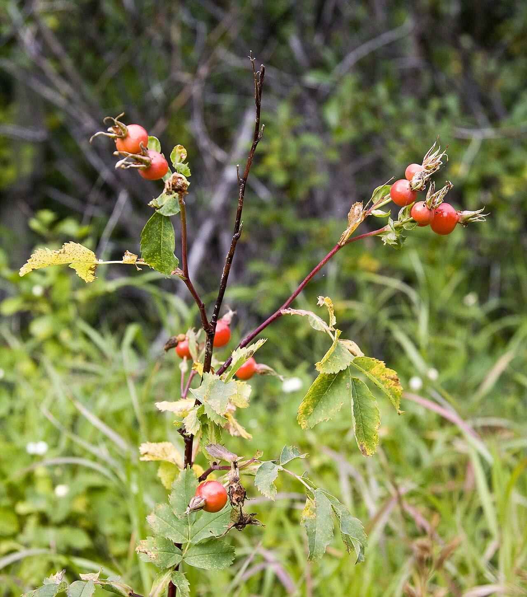

Photo by: Acroterion
Roses are known for their edible petals which can be eaten raw or cooked. Rose buds, young shoots, young leaves, and the fruit or rosehips are all edible and can be eaten raw or cooked. To eat the rosehips, you must eat around the seeds which are inedible you can also remove the seeds with a spoon.
1 tbs rose petals and/or leaves
1 c boiled water
Add rose petals and/or leaves to a cup then add boiled water. Let the petals/leaves steep for 5 – 10 minutes. Add sweetener to taste. You can also add black and green tea.
1 heaping teaspoon of rosehips
1 c boiled water
Add rosehips and water to a cup. Allow to steep for 15 minutes. Add sweetener to taste.
2 c water
1/4 c rose petals (dried)
1/3 c honey
2 c (1 pint) heavy cream
16 oz. strawberries
Make rose tea by boiling the two cups of water. Add rose petal and/or leave and allow to steep about 15 minutes. Strain the rose petals and/or leaves into a blender. Add honey to the blender and allow it to cool. Once cooled add heavy cream and strawberries. Blend the mixture until smooth. Pour mixture into a container and put the container into the freezer overnight to harden.